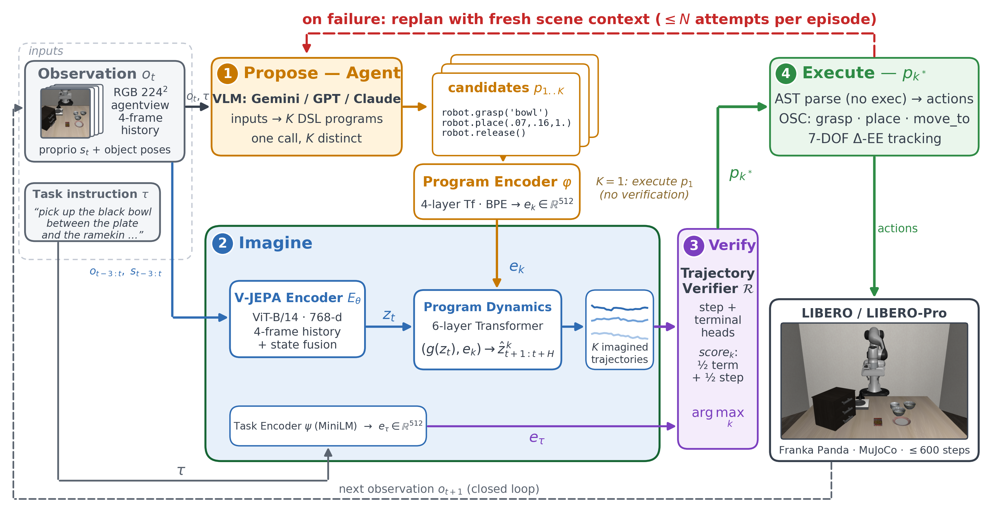
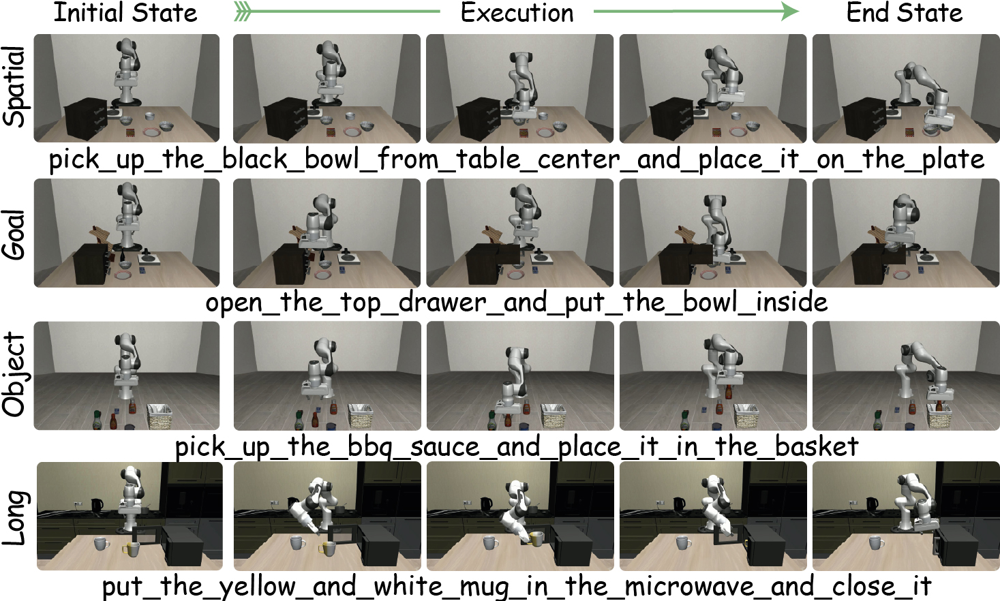
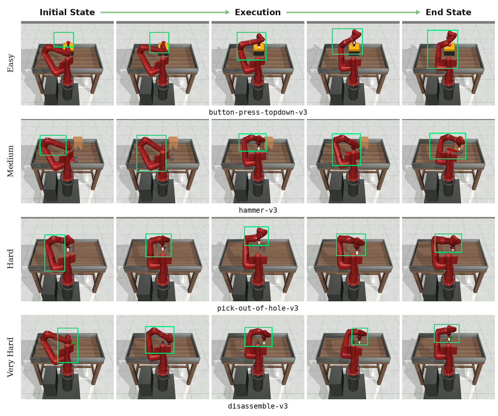
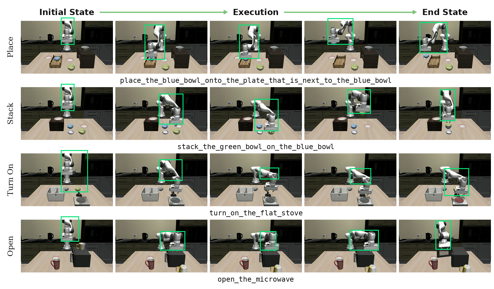
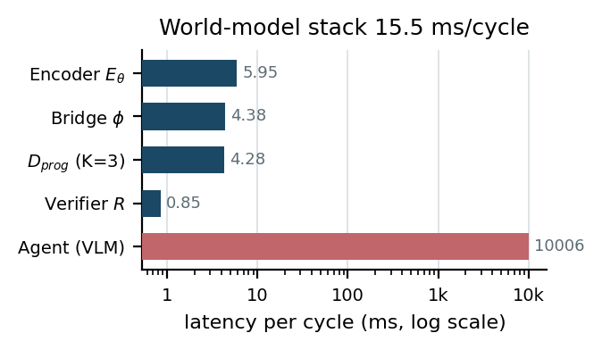
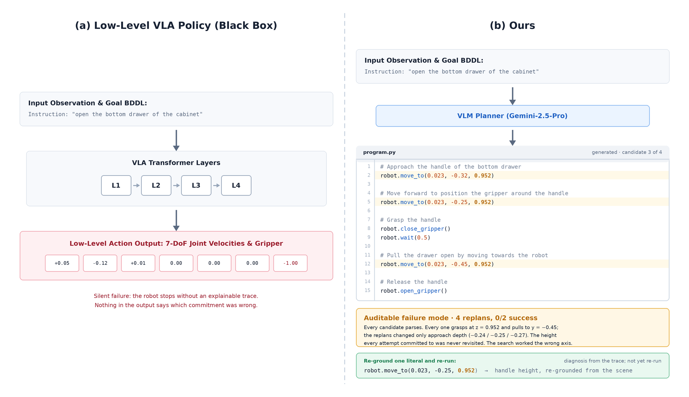

Agentic Intelligence and Latent Lookahead for Robust Manipulation
Author names, affiliations and code links are withheld while the paper is under anonymous review.
Abstract
Robust manipulation under distribution shift requires both grounding the current scene and comparing candidate commitments before execution. We present a closed-loop policy in which a frozen vision-language agent proposes programs in a nine-primitive robot DSL with explicit geometric literals, a Code-to-Token Bridge conditions a JEPA-style latent dynamics model, and a learned verifier ranks imagined trajectories. On LIBERO-PRO Spatial, one-shot program execution without imagination or ranking already reaches 0.38 Position and 0.37 Task success; the complete loop reaches 0.50 and 0.49, respectively. Thus the program interface accounts for most of the nonzero shifted performance, while replanning and selection add a 0.12 average gain. On byte-identical candidate sets, the latent ranker reaches 0.63 Top-1 success versus 0.57 for first-valid selection, with selector efficiency η = 0.40 (95% CI 0.22–0.58; exact McNemar p < 0.001). Oracle coverage is 0.75, identifying candidate generation as the larger remaining bottleneck. The gain is not uniform: Spatial-Semantic success is 0.73, below the displayed 0.88–0.97 range. Across the reported Meta-World difficulty splits, the system averages 94.0% success. At K = 3, H = 8, local verification takes 15.46 ms (64.7 cycles/s), whereas synchronous proposal plus verification takes 10.021 s (0.10 decisions/s) before task-dependent execution.
The Planning Loop
One planning round runs four stages. Pick a stage to see what it does and what it costs.

Components
Four learned or symbolic pieces sit between language and motor commands.
What it is
Nine primitives, each taking literal arguments only. Cartesian positions are metres in the robot-base
frame, orientations are normalized quaternions with qw ≥ 0, joint
targets are radians, and wait takes an integer number of low-level steps.
Why it matters
The executor never queries a simulator object pose, so the program must carry the geometric target literals the tracker needs. Writing coordinates rather than replaying a trajectory is what keeps Position-axis success nonzero.
move_tomove_to_posegraspreleaseplacemove_jointsopen_gripperclose_gripperwait
# one candidate program, parsed by AST before anything learned sees it
robot.open_gripper()
robot.move_to(-0.22, 0.02, 1.02)
robot.grasp('bowl')
robot.place(0.07, 0.16, 1.00)
robot.release()
The AST interpreter whitelists the nine primitives, accepts literals only, and never invokes
exec(). Invalid programs are discarded without repair.
What it does
Tokenizes DSL source with BPE under a 256-token cap, applies a 4-layer, 8-head transformer with masked mean pooling, and projects to a 512-d program embedding that the world model can consume as conditioning.
How it is trained
Contrastively, on labeled program pairs: a BCE term on scaled cosine similarity plus a symmetric InfoNCE term at temperature 0.1. The loss groups literal variants of one behavior and separates distinct skills.
Stated limitation. The loss constrains program-to-program geometry, not alignment to the training-time action surrogate the dynamics head was fit on, so substituting the bridge at inference is empirical rather than invariant by construction. Adding paired alignment raises Pair-AUC from 0.70 to 0.78 in the interface ablation below.
Dual encoder
Online and target ViT-B/14 encoders share architecture; the stop-gradient target follows an EMA with α = 0.996. Twelve transformer blocks encode each 224×224 frame, temporal attention pools per-frame CLS tokens, and projected 14-d proprioception is added to the 768-d output.
Two heads
An action-dynamics head grounds the encoder in single-step consequences during pretraining. A program-conditioned head decodes H queries from the seed latent, with AdaLN-Zero conditioning made explicitly horizon-dependent so the modulation varies with the prediction step.
Every learned loss lives in the 768-dimensional latent space; the architecture contains no pixel decoder. Removing the horizon code worsens normalized latent MSE from 0.35/0.60 to 0.42/0.80 at horizons 3 and 8, and drops selector efficiency from 0.40 to 0.25.
Two heads, one score
A 2-layer MLP trunk over the concatenation of each latent and the frozen task embedding, with a horizon head estimating success by step h and a terminal head estimating success at the end. The planning score is half the terminal head plus half the horizon mean.
Sparse supervision only
Both heads train on the sparse task-success predicate, with the horizon head weighted at 0.5. The verifier never reads program text, so different scores require the dynamics model to separate imagined outcomes.
Stated limitation. Training consumes stop-gradient target-encoder trajectories while planning scores imagined ones, leaving a measured encoded-to-imagined AUROC gap of 0.06 (0.78 versus 0.72).
LIBERO-PRO
Normalized success under five perturbation axes. Pick a suite; click a column header to sort. Cell shading tracks the value, so the Position and Task columns read at a glance.
| Model | Obj | Pos | Sem | Task | Env | Avg. SR |
|---|
Dashes mark cells the source did not report, and are never imputed. On the Spatial suite, OpenVLA and π0 score 0.00 on both Position and Task, while our loop reaches 0.50 and 0.49. The gain is a redistribution rather than uniform dominance: Spatial-Semantic success is 0.73 against 0.88–0.97 for the displayed baselines, and the Object-suite Object score is 0.76 against leaders at 0.98.

Meta-World and LIBERO-X
Hover a bar to read its exact value.
Meta-World success rate (%) across difficulty splits, 20 episodes per task over 50 tasks. The three strongest displayed baselines are shown; the full table is below. Protocol differences make this panel contextual rather than a controlled cross-paper ranking.
| Method | Venue | Easy | Mid | Hard | V. Hard | Avg. |
|---|---|---|---|---|---|---|
| HarmonyDream | ICML'24 | 81.0 | 91.0 | 72.5 | 44.5 | 72.3 |
| DP | IJRR'25 | 83.6 | 31.1 | 9.0 | 26.6 | 37.6 |
| TinyVLA | RA-L'25 | 77.6 | 21.5 | 11.4 | 15.8 | 31.6 |
| Mamba Policy | IROS'25 | 95.4 | 92.2 | 48.3 | 71.2 | 76.8 |
| π0 | RSS'25 | 71.8 | 48.2 | 41.7 | 30.0 | 47.9 |
| Agentic Intelligence Ours | – | 98.3 | 95.7 | 91.3 | 90.6 | 94.0 |
Degradation under cumulative severity
LIBERO-X grades distribution shift across five cumulative severity levels. Our accuracy decreases monotonically from 73.6 at Level 1 to 33.8 at Level 5, remaining above every displayed baseline at each level.
LIBERO-X accuracy (%) under increasing cumulative perturbation severity. L1–L3 use 600 tasks, L4–L5 use 826 tasks. Averaged over levels: ours 52.9, π0.5 39.3, GR00T N1.5 23.6, π0 15.0, X-VLA 14.6, OpenVLA-OFT 13.2.
Rollouts on both benchmarks
Frames sampled evenly from successful episodes, initial state through execution to the terminal state the success checker accepted. The green outline marks the largest region of each frame that differs from the static scene. The camera never moves, so the median of an episode is the empty scene. It is computed from pixels to trace the arm, and is not an object detection.


Those four rows are a sample. Every LIBERO-X task that produced a successful episode is browsable frame by frame, with the program statistics recorded for each rollout.
What Each Part Is Worth
Switch the decision rule to separate the program interface from replanning and ranking. Every row received byte-identical ordered candidates, and candidate forks restored the same simulator and RNG state.
Task-aggregated point estimates on LIBERO-PRO Spatial. All K = 3 rows fix the commit length, round budget and step ceiling. At this sample size, differences below roughly 0.10 should be read cautiously; the paired test below is the powered evidence for the ranking claim.
Same-candidate selector diagnostic
Every valid candidate ran to completion from the same restored state, so the only thing that varies is which one the rule picks. M = 800 states, mean 2.88 valid candidates, prevalence 0.52.
n10 = 112, n01 = 64, exact McNemar p < 0.001
95% CI 0.22–0.58
the larger measured bottleneck
Top-1 success on identical candidate sets. Deterministic rules use paired intervals and McNemar tests against first-valid; exact random uses a paired bootstrap. The 95% interval spans the preregistered modest and principal-effect regions, so we claim a measurable ranking contribution and report its uncertainty rather than treating its magnitude as precisely established.
Component and interface diagnostics
| Variant | Tp/H | Pair-AUC ↑ | NMSE 3/8 ↓ | AUROC enc. ↑ | AUROC imag. ↑ | AP/prev. ↑ | η |
|---|---|---|---|---|---|---|---|
| Full system | 3/8 | 0.70 | 0.35/0.60 | 0.78 | 0.72 | 1.40 | 0.40 |
| No horizon code | 3/8 | = | 0.42/0.80 | = | 0.64 | 1.21 | 0.25 |
| Terminal head only | 3/8 | = | = | 0.75 | 0.68 | 1.26 | 0.25 |
| Step head only | 3/8 | = | = | 0.76 | 0.70 | 1.33 | 0.30 |
| Paired bridge alignment | 3/8 | 0.78 | 0.33/0.57 | = | 0.73 | 1.42 | 0.41 |
| Matched horizon | 8/8 | = | 0.36/0.48 | = | 0.74 | 1.44 | 0.42 |
| Mixed-verifier training | 3/8 | = | = | 0.76 | 0.75 | 1.46 | 0.42 |
“=” marks cells identical to the full system by construction. The three interface corrections are diagnostic improvements: end-to-end Position/Task success was not measured for those rows, so they are not demonstrated policy gains. The no-horizon-code row is a single retraining run, a descriptive architectural diagnostic rather than a seeded causal estimate.
Verification Is Not the Bottleneck
Measured at K = 3, H = 8 on one RTX PRO 6000 in FP16. GPU values are means over 200 cycles after 20 warmups; the proposer round trip is the mean of 60 requests.
| Stage | Mean ms | Rate (Hz) | Share | Params (M) | Peak GB |
|---|---|---|---|---|---|
| Encoder Eθ | 5.95 | – | 0.059% | 93.4 | 0.54† |
| Bridge φ | 4.38 | – | 0.044% | 38.6 | 0.17† |
| Dprog (batched K = 3) | 4.28 | – | 0.043% | 65.9 | 0.40† |
| Verifier R | 0.85 | – | 0.008% | < 1 | < 0.01† |
| Local verification stack | 15.46 | 64.7 | 0.154% | 198.3 | 1.51‡ |
| Proposer (VLM, round trip) | 10 006.00 | 0.100 | 99.846% | remote | remote |
| Decision path (synchronous) | 10 021.46 | 0.100 | 100% | – | 1.51‡ |
| Tracker / env. step§ | 0.52 | – | excluded | n/a | n/a |
†Module-isolated peak; these entries are not additive. ‡Joint peak with all local weights resident and peak activations. §Per low-level environment step, excluded from decision-path arithmetic because commit duration varies. The cached instruction encoder, one-time parsing and preprocessing, and remote proposer parameters and memory are excluded. These are planning-throughput figures rather than motor-control rates.

An Auditable Decision Record
The explicit program boundary leaves artifacts that reactive action generation does not expose directly.

This is a concrete systems property of the interface, not a claim about human interpretability. No user study was run.
Evidence Boundaries
The 0.12 gain is not all ranking
The one-shot-to-full difference combines candidate count, replanning, imagination and ranking. Only the same-candidate fork isolates selection, and it yields +0.06.
Proposal is the larger bottleneck
The remaining oracle and coverage gaps are 0.12 and 0.25. Candidate generation, not ranking, is where the most headroom sits.
Grounding error is not isolated
The proposer writes the robot-base-frame literals and no learned converter modifies them. We do not report a literal-to-ground-truth coordinate-error distribution, so Position-axis claims are made at the interface level.
Robustness is a trade-off
Spatial-Semantic success stays at 0.73, below every displayed baseline. The evidence supports a redistribution of robustness, not uniform superiority.
Train and test interfaces differ
Training supervises three latent steps while planning queries eight, and the dynamics head is trained on an action surrogate but queried on the bridge. The substitution is empirical.
Correction rows are diagnostic only
The interface corrections and the no-horizon-code row lack matched end-to-end reruns or multi-seed intervals.
BibTeX
@inproceedings{anonymous2027agentic,
title = {Agentic Intelligence and Latent Lookahead for Robust Manipulation},
author = {Anonymous},
booktitle = {Under review at the IEEE International Conference on Robotics and Automation (ICRA)},
year = {2027}
}Placeholder entry. Author names are withheld while the paper is under anonymous review.